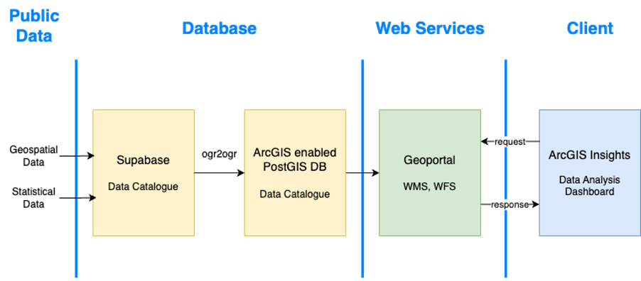
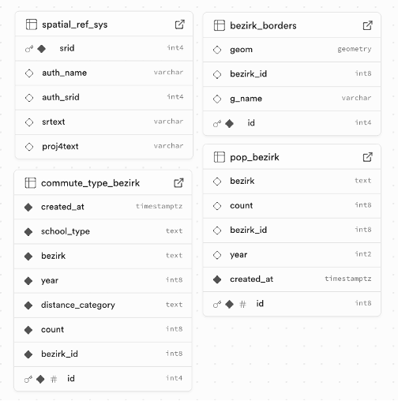
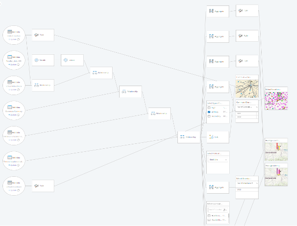

This project visualizes how students in Austria commute to school, focusing on accessibility, travel time, and district-level disparities. Using openly available data and SDI principles, we built a complete workflow: data collection, preprocessing, database integration, web service publication, and dashboard visualization.
The goal was to support education planners by highlighting where long commutes occur, which school types are underserved, and how commuting patterns differ across districts.
School types in Austria are unevenly distributed, forcing many students to travel long distances. Long commutes reduce free time, increase stress, and contribute to environmental impact. Despite this, visualizations of school commutes are rare, especially for specialized schools.
By mapping commute distances, times, and origin–destination flows, the project provides insights into structural shortcomings and supports more equitable educational planning.
The dashboard presents:
All data is stored and served through standardized, open geospatial services.
The project followed a complete SDI workflow, starting from data acquisition and preprocessing, moving through database integration and service publication, and ending with a fully interactive dashboard.

The database was implemented using PostgreSQL/PostGIS, designed around a single district identifier
(bezirk_id) that links all spatial and statistical datasets. This ensured seamless joins
between layers and efficient querying from the dashboard.
Data was initially stored in Supabase but migrated to an ArcGIS-enabled PostGIS instance using GDAL:
ogr2ogr -f "PostgreSQL" PG:"host=... dbname=... user=..." \
input.geojson -nln districts -nlt MULTIPOLYGON
Indexes were added for performance:
CREATE INDEX idx_districts_geom ON districts USING GIST (geom);
CREATE INDEX idx_od_origin ON od_matrix (bezirk_id);
CREATE INDEX idx_od_dest ON od_matrix (bezirk_id_dest);

All spatial layers were published as OGC-compliant Web Feature Services (WFS) through the university’s GeoServer instance. Statistical tables were exposed as REST services.
The dashboard was built in ArcGIS Insights, combining spatial and non-spatial data with interactive filtering and real-time aggregation.
districts_wfs.bezirk_id.district_centroids_wfs.